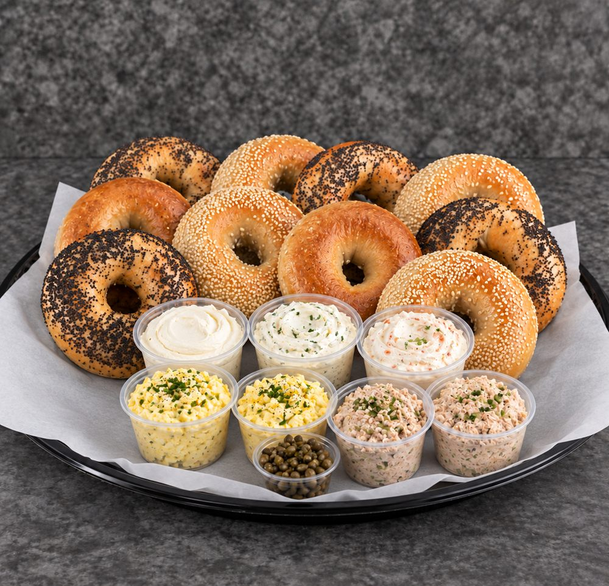
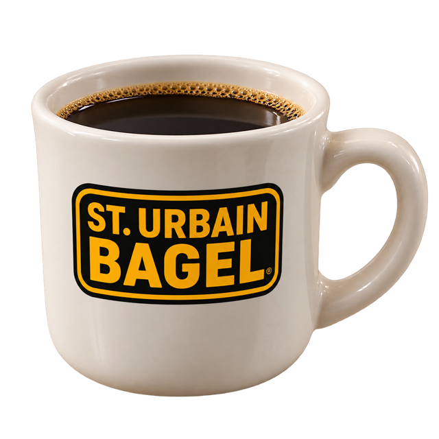

At St. Urbain Bagel Bakery, we are committed to providing the best possible service to our customers. Whether you’re placing an order or simply stopping by for a quick treat, you can always expect a warm welcome and friendly smile.
We continue the legacy that started centuries ago, and we’re dedicated to preserving it for generations to come.

Good food brings people together.
